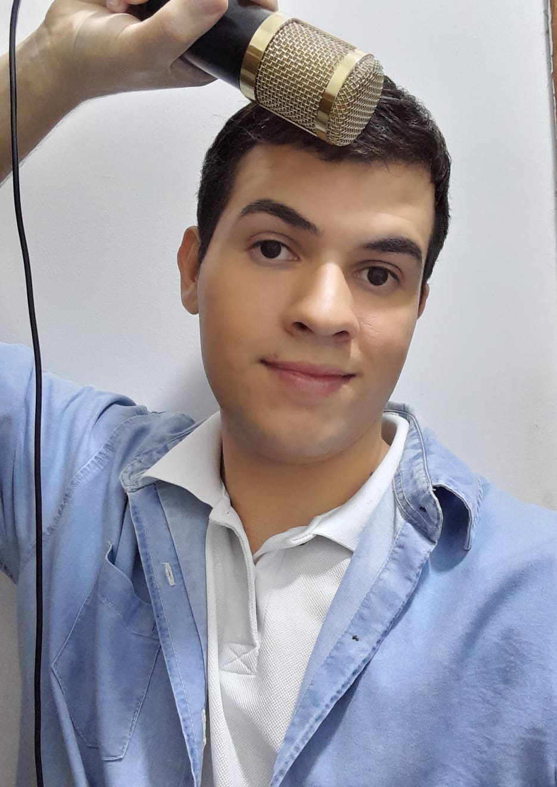

Use 100% do seu pontencial
Desbloqueie seus agudos e graves com o minimo esforço
Agende sua primeira aulaDesbloqueie seus agudos e graves com o minimo esforço
Agende sua primeira aula teclado
tecladoComo professor e cantor, eu afirmo que a educação e estudo musical revelam o potencial de cada aluno, para cantar bem é necessário estudo, foco e rotinas de treino. Meu objetivo como professor é ser um facilitador ao conhecimento.
Iniciei meus estudos musicais em um coral de musica entre os anos 2016/2017, aprendendo como cantar em coro e a tocar violão. Nos dias atuais, Lucas Vox é professor de canto, violão e teclado. Trabalha com alunos online e presencias.
Lucas Vox é natural do Rio de janeiro, Nova Iguaçu, porém sua mãe é de região nordestina e seu pai da região sudeste, suas influencias musicais são na área do pop, mpb , rnb , bossa nova , samba, chegando a ser uma pessoa bastante eclética pois acredita que a pluralidade de estilos ajudam a desenvolver a sua musicalidade como um todo.
Em 2022 entrou para a faculdade de licenciatura em música pela a Unicesumar. , atualmente está indo para o seu 3 ano de graduação.
Possui cursos de capacitações e treinamentos: Perfis vocais com ênfase em treinamento e condicionamento vocal por Camila Zaponi(2022). Ensinando canto, curso de formação em pedagogia vocal (2022). Participou do Curso em pedagogia vocal método Singer teacher online por Marcio Markkx (2022/2023).
Treinamento professor de canto expert (2023), Lucas continua investindo em vários cursos para aperfeiçoamento como cursos voltados na área de pedagogia vocal, belting , treinamento vocal, produção musical , coaching para cantores que querem gravar suas musicas em estúdio.
Clique aqui e entre em contato